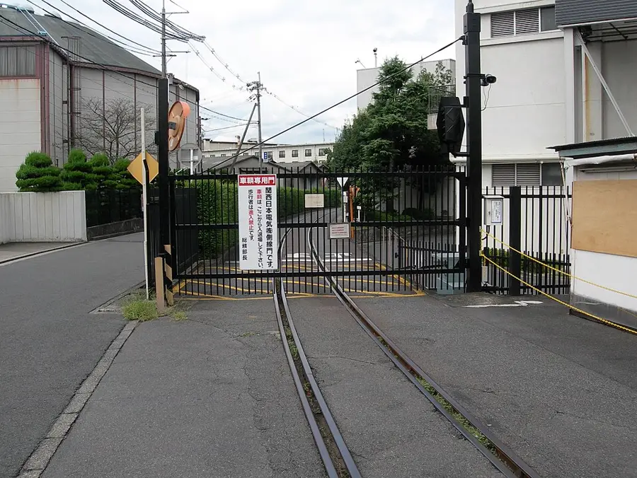

대표 로고대표 브랜드 마크
대표 로고대표 브랜드 마크NEC
NEC(NEC Corporation)는 일본 도쿄도 미나토구 시바에 본사가 있는 스미토모 그룹 계열의 정보통신기술 및 전자기업이다. 지금은 주로 엔터프라이즈 대상의 정보통신 사업에 주력한다.
최종 업데이트
NEC는 어떤 브랜드인가
NEC는 일본어로 日本電気株式会社, 영어로 Nippon Electric Company, Limited로 불린 기업이며, 일본에서는 약칭 닛덴도 드물게 쓰이나 NEC로 더 널리 알려져 있다. 오랜 기간 유선 및 무선 통신 장치(전화기 같은 가전기기부터 전화 교환기, 기지국 같은 대형기기까지)와 컴퓨터를 주요 사업으로 했다.
전후 일본의 주요 가전제품 제조회사가 된 적도 있으나, 지금은 엔터프라이즈 사업과 기지국 등 통신설비 사업을 주요 사업으로 한다. 일본에서 NEC라는 명칭이 친숙해진 것은 개인용 컴퓨터가 판매되면서부터이다.
스미토모 전기공업의 형제 회사이며, 스미토모 상사 등과 더불어 스미토모 그룹의 일부이다. 일본 이외 국가에서는 정식 사명으로도 NEC를 써왔다.
NEC는 어떻게 시작되고 성장했나
일본 전기는 1899년 7월 17일에 설립되었다. 이와다레 쿠니히코와 미국 웨트턴 일렉트릭이 54%를 출자하여 설립한 일미합작 회사였으며, 일본 최초의 합작기업으로 기록된다.
이후 스미토모 재벌에 경영이 위탁되었고, 제2차 세계대전에서 미일관계가 악화되어 스미토모 그룹의 자회사가 되었다. 1943년부터 1945년까지는 "스미토모 통신공업"이라는 회사명을 사용하기도 했다.
전쟁 후에는 통신, 진공관, 반도체 소자 같은 전자제품을 생산했고, 1958년에 NEAC 1101로 시작하여 컴퓨터 개발에 집중했다.
NEC의 브랜드 아이덴티티는 무엇인가
컴퓨터와 통신의 융합을 뜻하는 C&C 이념을 내세운 일본의 정보통신 기업이며, 1899년 일본 최초의 합작기업으로 설립된 이력이 있다.
NEC의 대표 제품과 서비스는 무엇인가
제품 및 서비스는 컴퓨터의 생산, 컴퓨터 시스템의 구축, 집적회로, 휴대전화로 구성되었다. 1976년에는 TK-80을 발표하여 일본의 마이크로 컴퓨터 시장의 활성화를 꾀했다.
1982년에 판매된 PC-9800 제품군은 약 10년간 일본의 개인용 컴퓨터 시장을 석권했다. 통신 분야에서는 통신위성부터 광통신까지 여러 설비를 판매하며, 오피스 컴퓨터와 서버 분야에서는 일본 최고 점유율을 보인다.
2020년에는 라쿠텐 모바일의 O-RAN 5G 무선설비를 후쿠시마현 공장에서 제조하여 출하했다.
NEC는 지금 어떤 상태인가
오늘날 NEC는 엔터프라이즈 사업과 기지국 등 통신설비 사업을 주요 사업으로 한다. 2011년 1월 레노보와 합작회사 NEC 레노보 재팬(레노보 51 : NEC 49)을 설립하여 개인용 컴퓨터 사업을 이전했으며, 2016년 기준 5%의 지분만 보유한 채 브랜드 네임을 빌려주고 있다.
휴대전화기 사업은 2010년 카시오, 히타치와 합작하여 NEC 카시오를 설립했으나, 2016년 모든 지분을 재매입한 뒤 해산했다.
NEC 로고는 어떻게 변해왔나
대표 로고대표 브랜드 마크사진으로 보는 NEC의 역사

자주 묻는 질문
NEC는 어느 나라 브랜드인가요?
NEC는 일본의 기술·전자 브랜드입니다.
NEC는 언제 설립되었나요?
NEC는 1899년 설립되었습니다.
NEC의 브랜드 아이덴티티는 무엇인가요?
컴퓨터와 통신의 융합을 뜻하는 C&C 이념을 내세운 일본의 정보통신 기업이며, 1899년 일본 최초의 합작기업으로 설립된 이력이 있다.
NEC의 대표 제품은 무엇인가요?
제품 및 서비스는 컴퓨터의 생산, 컴퓨터 시스템의 구축, 집적회로, 휴대전화로 구성되었다.
NEC는 현재 어떤 상태인가요?
오늘날 NEC는 엔터프라이즈 사업과 기지국 등 통신설비 사업을 주요 사업으로 한다.
NEC의 본사는 어디에 있나요?
NEC의 본사는 도쿄도에 있습니다(위키데이터 기준).
NEC의 모기업은 어디인가요?
NEC의 모기업은 스미토모 그룹입니다(위키데이터 기준).
출처와 검증
NEC 관련 참고: 공식 웹사이트 · 위키데이터 Q219203 · 한국어 위키백과 · 영어 위키백과. 브랜드명은 한글과 원어를 함께 표기하되 데이터에 없는 표기는 만들지 않습니다. 기원 국가·설립연도는 검수된 정의문에서 확인된 값을 우선하고, 없을 때만 공식 웹사이트 URL이 일치하는 위키데이터 개체의 값을 씁니다. 탄생일의 월·일은 위키데이터, 위키백과 정보상자, 본문 가운데 같은 연월로 확인되는 값만 싣고, 출처끼리 다르면 싣지 않습니다. 위키데이터 값은 2026-11-11 기준입니다.